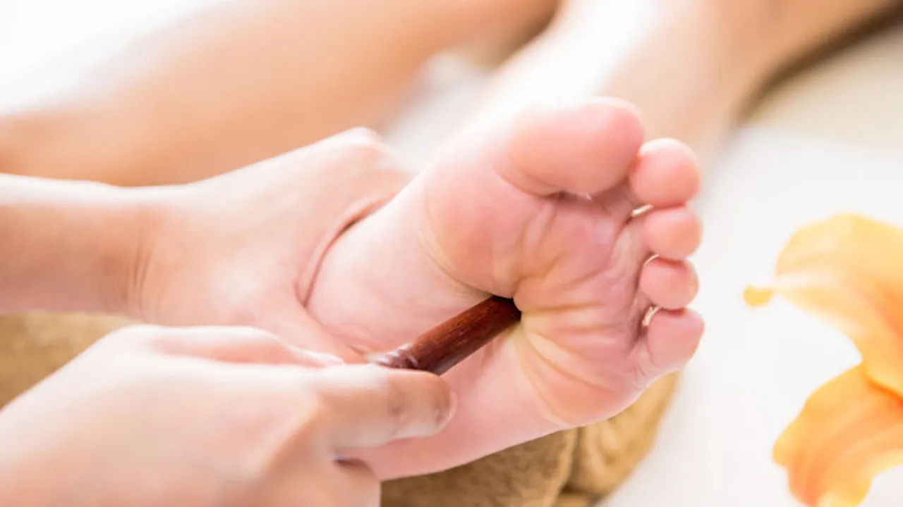

Is Reflexology Effective for Psoriasis? Understanding Its Benefits and Limitations

Introduction
Psoriasis is a chronic autoimmune skin condition that affects millions of people worldwide. Characterized by red, scaly patches of skin, psoriasis can cause itching, discomfort, and emotional distress. While conventional treatments such as topical creams, phototherapy, and medications help manage symptoms, many individuals seek alternative therapies to complement their primary treatment plan. One such alternative therapy is reflexology.
Reflexology is a holistic practice that involves applying pressure to specific points on the feet, hands, and ears, which are believed to correspond with different organs and systems in the body. But can reflexology be an effective treatment for psoriasis? In this article, we will explore how reflexology works, its potential benefits for psoriasis, scientific evidence, and how it can fit into a holistic psoriasis management plan.
What is Reflexology?
Reflexology is based on the theory that different points on the feet, hands, and ears are connected to various body organs and systems. By applying pressure to these reflex points, practitioners believe they can stimulate the body’s natural healing processes and restore balance. Reflexology is often used to relieve stress, improve circulation, and support overall well-being.
How Does Reflexology Work?
Reflexologists use maps of the feet and hands to determine the corresponding areas of the body. For example:
- The ball of the foot is linked to the heart and chest.
- The arch corresponds to the liver and kidneys.
- The heel is associated with the lower back and intestines.
By massaging these specific points, reflexologists aim to promote relaxation, boost circulation, and enhance detoxification, which may contribute to overall health improvement.
How Can Reflexology Help with Psoriasis?
While reflexology does not claim to cure psoriasis, it may help manage symptoms by addressing underlying triggers such as stress, poor circulation, and toxin buildup. Here are some ways reflexology might be beneficial for psoriasis sufferers:
- Stress Reduction and Emotional Well-being
Stress is a well-known trigger for psoriasis flare-ups. Reflexology is widely recognized for its ability to induce deep relaxation, lower cortisol levels, and reduce anxiety. A relaxed state can help psoriasis patients manage stress more effectively, potentially reducing the frequency and severity of flare-ups.
- Improved Blood Circulation
Psoriasis is associated with inflammation and immune system dysfunction. Reflexology is believed to enhance blood flow, ensuring that oxygen and essential nutrients reach affected skin areas more efficiently. Improved circulation can support skin healing and reduce inflammation.
- Detoxification and Lymphatic Drainage
Reflexology may stimulate the body’s natural detoxification process by promoting lymphatic drainage. Since toxin buildup can contribute to inflammation, better detoxification could be beneficial for individuals with psoriasis.
- Boosting the Immune System
Psoriasis is an autoimmune disorder where the immune system mistakenly attacks healthy skin cells. Reflexology is thought to strengthen the immune system by improving energy flow throughout the body. A balanced immune system may contribute to better psoriasis management.
- Pain and Itch Relief
Psoriasis often causes itching, burning, and discomfort. Reflexology may help alleviate pain by releasing endorphins, the body’s natural painkillers. Additionally, stimulating specific pressure points may reduce skin sensitivity and irritation.
Scientific Evidence on Reflexology for Psoriasis
Although reflexology has been used for centuries as a complementary therapy, scientific research on its effectiveness for psoriasis is limited. However, studies on reflexology’s benefits for stress relief, circulation, and immune support suggest that it could be helpful in managing psoriasis symptoms. Here are some key findings:
- Stress Reduction: A study published in the Journal of Alternative and Complementary Medicine found that reflexology significantly reduced stress and anxiety levels, which are common psoriasis triggers.
- Improved Circulation: Research in The Journal of Traditional and Complementary Medicine reported that reflexology could enhance blood circulation, potentially aiding in skin regeneration.
- Pain Management: A meta-analysis in Pain Management Nursing concluded that reflexology could be effective for pain relief in chronic conditions, suggesting it may help with psoriasis-related discomfort.
While these studies do not specifically target psoriasis, they indicate that reflexology may offer supportive benefits for those dealing with the condition.
How to Incorporate Reflexology into Your Psoriasis Treatment Plan
If you are considering reflexology as part of your psoriasis management plan, here are some steps to get started:
- Find a Certified Reflexologist
Look for a qualified and experienced reflexologist who specializes in holistic healing. You can check professional associations such as the American Reflexology Certification Board (ARCB) or similar organizations in your country.
- Discuss Your Condition with Your Reflexologist
Inform your reflexologist about your psoriasis, symptoms, and any medications you are taking. This will help them customize the session to address your specific needs.
- Practice Self-Reflexology at Home
In addition to professional sessions, you can perform simple reflexology techniques at home. Here are some easy steps:
- Press the solar plexus point (located in the center of the foot) to relieve stress.
- Massage the liver and kidney points (arch of the foot) to support detoxification.
- Stimulate the adrenal glands (inner edge of the foot near the heel) to balance the immune response.
- Combine Reflexology with Other Natural Remedies
Reflexology works best when used alongside other psoriasis treatments such as:
- Healthy Diet: Anti-inflammatory foods such as turmeric, omega-3 fatty acids, and probiotics can support skin health.
- Hydration: Drinking plenty of water helps flush out toxins and keep skin hydrated.
- Moisturization: Applying natural oils like coconut or aloe vera can soothe dry, irritated skin.
- Meditation and Yoga: Stress management techniques can further reduce flare-ups.
Potential Limitations of Reflexology for Psoriasis
While reflexology can provide several benefits, it is important to be aware of its limitations:
- Reflexology is not a cure for psoriasis.
- Results may vary from person to person.
- It should be used as a complementary therapy, not a replacement for medical treatments.
- Some individuals with severe psoriasis on their feet may find reflexology uncomfortable.
If you experience any discomfort or worsening symptoms, consult a healthcare professional before continuing reflexology treatments.
Conclusion: Is Reflexology Worth Trying for Psoriasis?
Reflexology is a gentle, non-invasive therapy that may help psoriasis sufferers manage their symptoms by reducing stress, improving circulation, and promoting relaxation. While scientific evidence is limited, many people report positive effects when using reflexology as a complementary treatment.
If you are looking for a holistic approach to managing psoriasis, reflexology may be worth exploring. However, it is essential to combine it with conventional treatments and lifestyle changes for the best results. Always consult with a healthcare professional before making significant changes to your treatment plan.